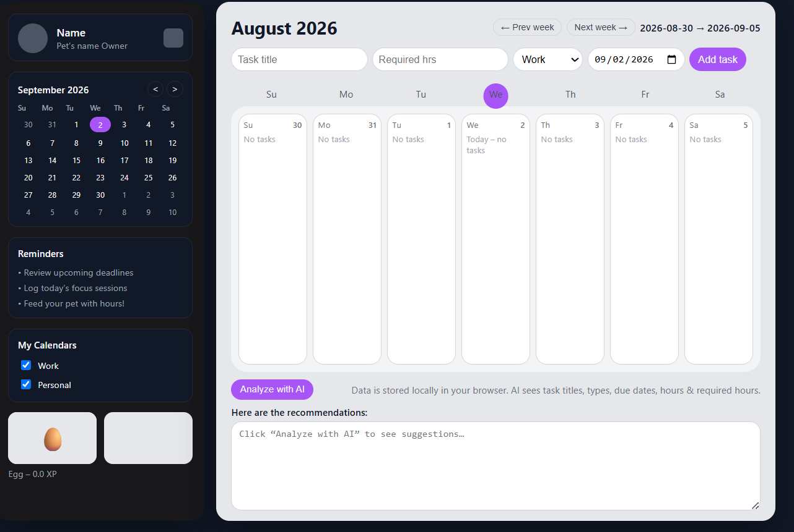
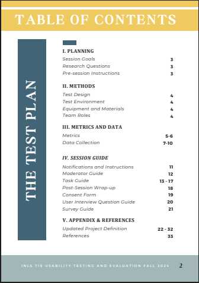

I design and build human-centered AI systems.
I'm Nathan Cavender, an information scientist making intelligent products more measurable, legible, and useful.
Sample physician
Cardiology · Charlotte, NC
Built, tested, explained.
Products and research systems that move from messy inputs to decisions people can trust.
MD Twin
Physician digital twins for market research.
 ↗
↗Structured Annotation
Making LLM behavior measurable against human ground truth.

↗Task Tamer
An AI task manager with a little reward loop.

↗WHO Mortality Database
Usability testing for a public-health data interface.
 ↗
↗Repository Usage Analytics
Turning operational logs into interpretable evidence.
Systems thinking, in practice.
Graduate Research Assistant
AI evaluation · LLM systems · HCI
Data & Research Intern
Repository analytics · data curation · storytelling
Design & Operations Assistant
Workflow design · customer feedback · brand systems
From the model
to the moment.
I work across product thinking, implementation, research, and evaluation. The question underneath everything is simple: can people understand what a system is doing, and can we prove it is helping?
Start a conversation ↗Build
JavaScript · HTML/CSS · PostgreSQL · Node
AI / Evaluation
LLMs · Prompt systems · Ground truth · Precision / recall
Research
UX research · Usability testing · Information retrieval
Data
Python · Visualization · Analytics · Excel